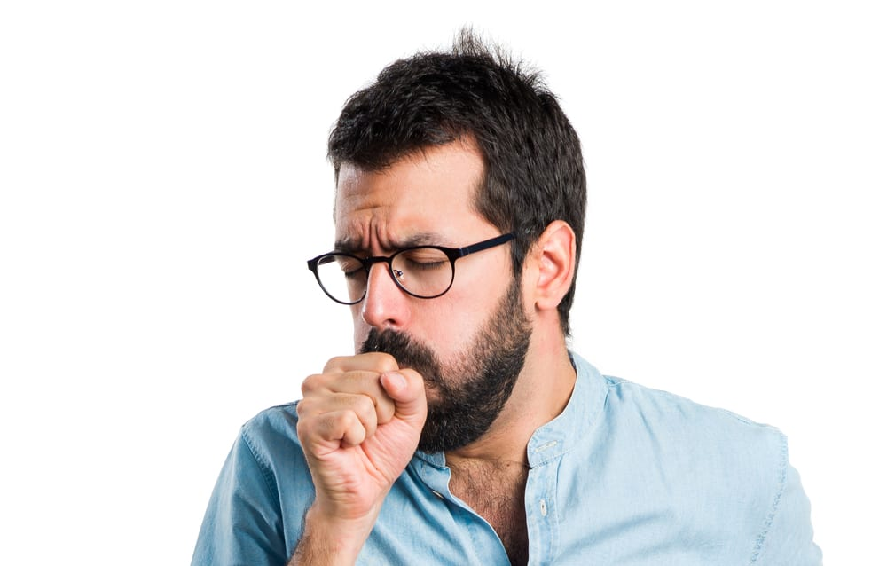
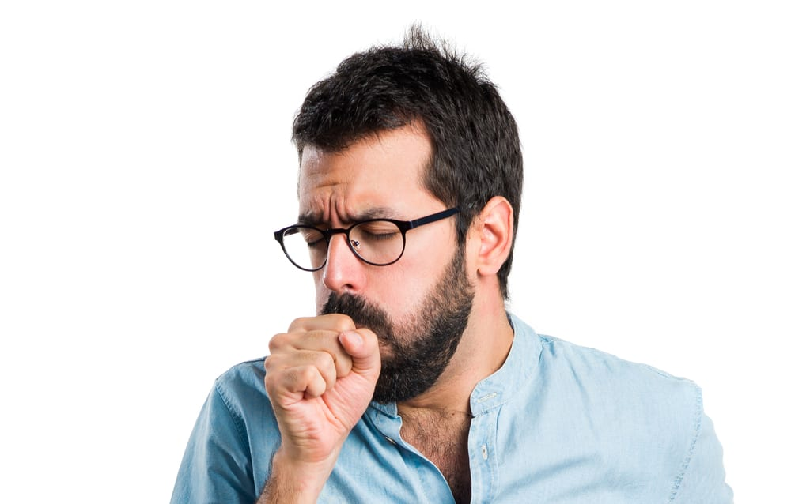

viruse je najbolje preventirati nego leciti zato evo najbitnijih stvari sto treba uraditi radi preventive
higijena- dobra higijena je najbitnija u pitanju preventiranja virusa
ishrana-zdravi ishrana nam jaca imunitet i sprecava viruse
voda- pijte vodu cesto jer pomaze telu bolje da radi
fizicka aktivnost- ako smo aktivni virusima ce biti mnogo teze da nas zaraze
konstante provere- idite kod vasih lekara bar na svakih 6 meseci ako vam se pojave simptomi to znaci da ste vec zarazeni
 
